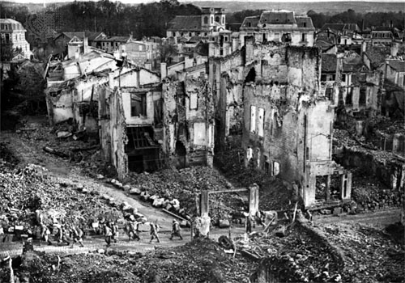

IF YOU CAN SEE THIS TEXT, YOU NEED TO ENABLE JAVASCRIPT FOR MANY FUNCTIONS OF THIS SITE
When people talk about World War I, it is often about the trench warfare that occurred at the battles of Verdun and the Somme. In 1916, the largest battles of the war would start and end. The battles of Verdun and the Somme would be long stalemates and some of the largest casualty totals in the war. Where in 1915 the Central powers were stronger, this year would slowly mark the turnaround in favor of the Entente/Allies. In the east battles continued and the Ottomans would commit a war atrocity they still deny today.